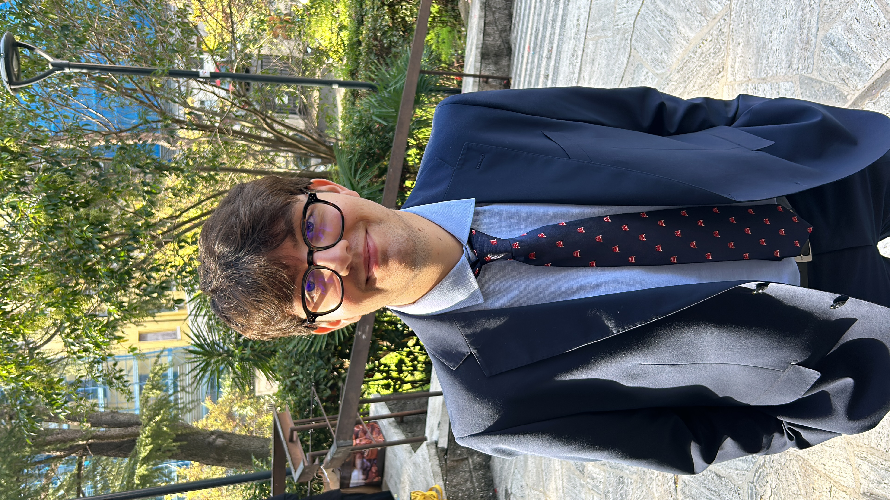

I am a PhD student in Economics at Sapienza University of Rome, working under the supervision of Prof. Michele Raitano. I am an applied economist — or at least I aspire to be one — studying how labour market inequalities persist across generations, with a focus on intergenerational mobility.
From April 2026, I will be a visiting researcher at the Research Group "Inequality and Public Policy" at ZEW Mannheim.

Current research projects.
with Michele Raitano
with Stefano Filauro & Michał Gulczyński
Peer-reviewed papers.
Papers are brewing. In the meantime, I'm fueled by espresso and econometrics. Check back soon — or just keep refreshing, I won't judge.
$ submit_paper --fingers-crossedTeaching and other activities.
Teaching assistant for the course at Sapienza University of Rome.
Teaching assistant for the course held by Prof. Massimiliano Tancioni at Sapienza University of Rome.
A short article exploring the Nordic model — between idealization and reality. Published on Etica & Economia. (In Italian)
Read article →I'm always happy to discuss research ideas, potential collaborations, or just chat about economics — or football. Feel free to reach out.
riccardo.casullo@uniroma1.it